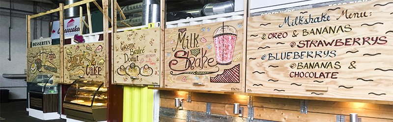

Ny start i Aarhus
Hvad kan jeg lave i Aarhus til SU-venlige priser, er der specielle arrangementer jeg skal holde øje med? Dette er nok nogle af de tanker du har gjort dig, da du flyttede til Aarhus, og pludselig stod på egne ben i en ny by. Jeg har samlet nogle få tips, ideer og begivenheder, som du kan benytte dig af.
Studierabat i Aarhus:
Studierabat er guds gave til studerende. Hvis du vil spare lidt penge, vil jeg klart anbefale, at kigge på studiz.dk. Her kan du oprette en profil, hvor du bl.a. kan benytte dig af studierabatter online. Ikke nok med det, så kan du også se, hvilke steder i Aarhus der udbyder studierabat. Studiz udbyder ligeledes en app, som du med sikkerhed kan få meget gavn af.
Oplevelser:
Der findes en del ting i Aarhus som du kan besøge, for at få en på opleveren. Jeg har listet nogle forskellige steder op, hvor du bl.a. kan benytte dig af studierabat.
- Den Gamle By: Her kan du dykke ned i tiden, og opleve hvordan danske hustande så ud tilbage i tiden. Den Gamle By er super hyggelig, specielt ved juletid. I Den Gamle By, kan du som studerende få studierabat.
- ARoS: Hvis du er en smule kunstinteresseret, så er ARoS stedet for dig. ARoS er et super fedt og interessant museum, som byder på mange forskellige former for kunst. Det særlige ved ARoS er regnbuen, som ses på toppen af museet. Fra ”Your rainbow panorama”, har du den smukkeste udsigt i alle regnbuens farver, ud over hele Aarhus. På ARoS, kan du som studerende spare 50 kr. på medlemskab af ARoS klubben. Medlemsskabet giver fri entre i et år + en gratis ledsager.
- Væksthusene: Her kan du gå rundt gennem 4 klimazoner, hvor du kan nyde og studere naturens mange skønheder i form af planter. Væksthusene er gratis, så her kan du få en fantastisk oplevelse for ingen penge.
- Marselisborg Dyrehave: Her kan du komme helt tæt på dyrene, og gå en tur i dejlige grønne omgivelser. Dyrehaven er en gratis oplevelse, så tag kæresten eller familien under armen, og besøg dyrehaven.
Begivenheder:
Aarhus er en levende by, og der sker noget hele tiden.
For studerende er der typisk to store begivenheder, som afholdes hvert år, nemlig Kapsejlads og Danmarks støre fredagsbar.
Disse to arrangementer afholdes i universitetsparken, og du burde gøre dig selv den tjeneste, at tage derhen, når det afholdes igen.
En godt sted at holde øje med, er Godsbanen.
Du kan med fordel holde øje med Godsbanen på facebook, for at holde dig opdateret på, hvornår de har arrangementer. De plejer bl.a. at afholde loppemarkeder, Mega Kup osv.
Disse begivenheder/arrangementer, er dog ikke de eneste der findes i Aarhus. Aarhus afholder blandt andet Spot Festival, Aarhus Festuge og meget mere.
Hold dig opdateret, og gå ikke glip af de fedeste begivenheder, som finder sted i Aarhus.
Spisesteder:
Der findes mange forskellige spisesteder i Aarhus, så det er bare med at kigge dig omkring. Hvis du er ude efter morgenmad/brunch på en cafe, kan jeg klart anbefale Cafe Ziggy nede ved åen. Her kan du bl.a. få morgenmadsbuffet for kun 39 kr., billigt ikke? Et andet sted jeg er faldet for, er Street Food. Her kommer du ind i en stor betonhal, hvor der er opstillet en masse boder i form af ”containere”. På Street Food, kan du få mad fra mange forskellige nationer, og samtidig få en på opleveren.